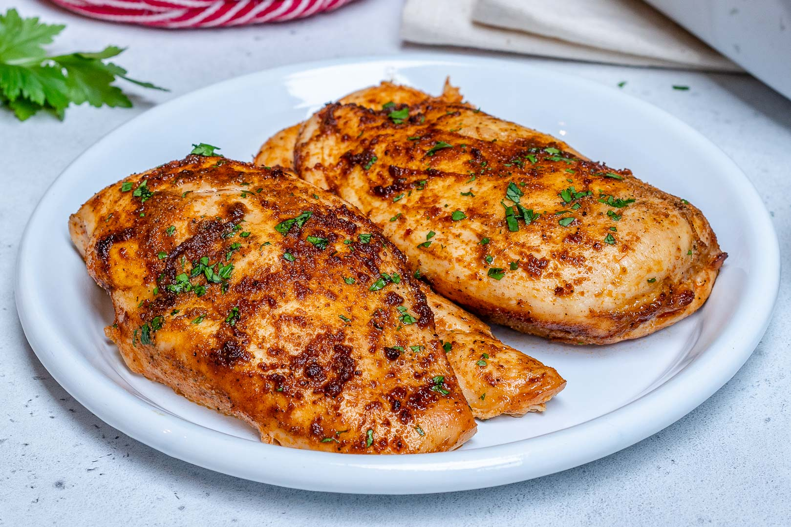

Baked Chicken Breasts

Description
Learn how to bake chicken that's tender, juicy, and perfect every time with this simple, 5-ingredient recipe for boneless, skinless chicken breasts. Adding just a bit of chicken broth to those beautiful pan drippings creates a tasty pan sauce that adds extra flavor at the table.
Ingredients
- Chicken Breasts: Of course, you'll need chicken breasts. This recipe calls for four skinless, boneless chicken breast halves.
- Olive Oil: Olive oil provides moisture and prevents the chicken breasts from drying out. It also helps the chicken cook more evenly.
- Salt: Use your favorite coarse sea salt for the most delicious results.
- Creole Seasoning: Creole seasoning adds flavor and a bit of welcome heat.
- Chicken Broth: You'll use chicken broth to make an easy pan sauce to pour over the baked chicken.
Steps
- Coat the chicken breasts with olive oil, then sprinkle both sides with salt and Creole seasoning.
- Place the seasoned chicken in a broiler pan. Bake in an oven for about 10 minutes, then flip and continue to bake for about 15 more minutes (or until the juices run clear). When the chicken is done baking, transfer it to a plate.
- Pour the chicken broth into the pan you used to bake the chicken. Scrape any browned bits off the side with a spatula. Drizzle the pan sauce over the baked chicken before serving.